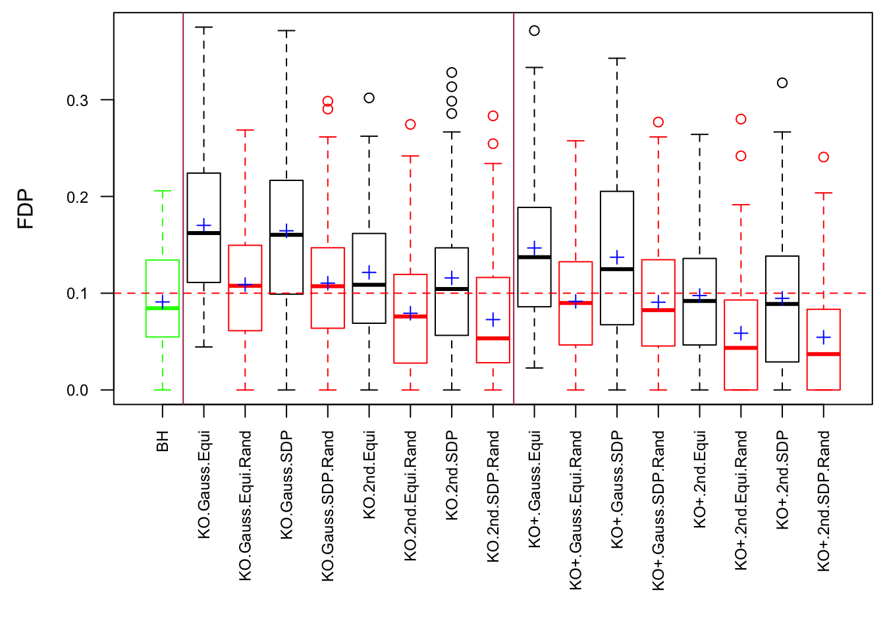
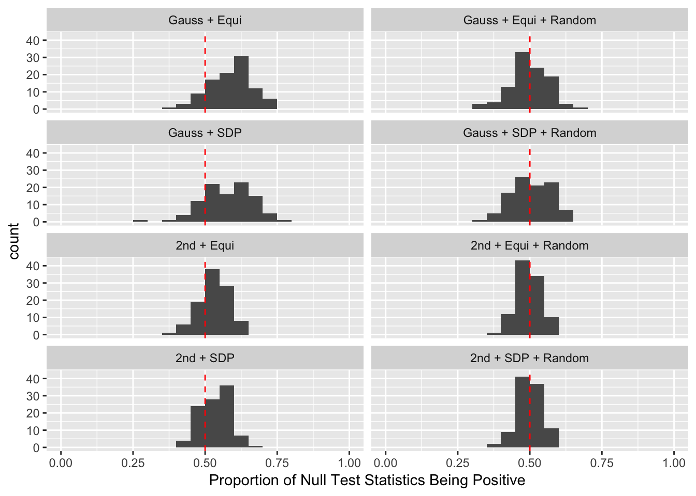
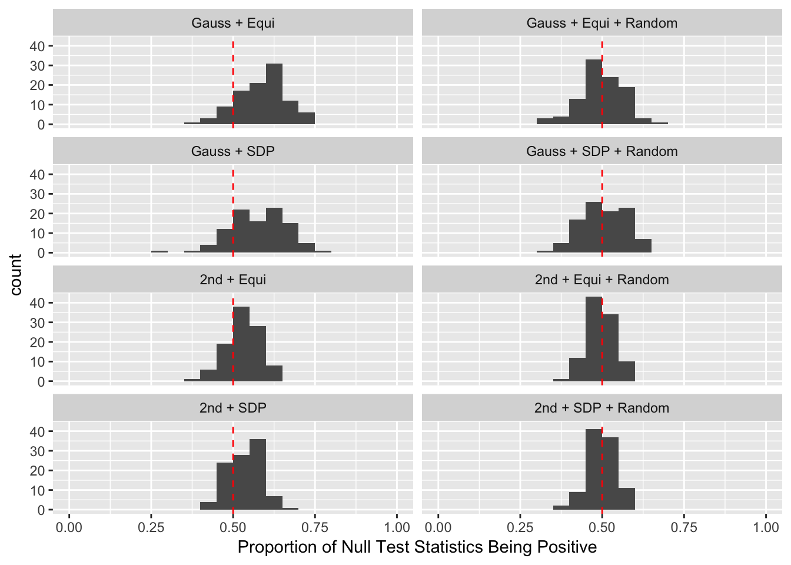
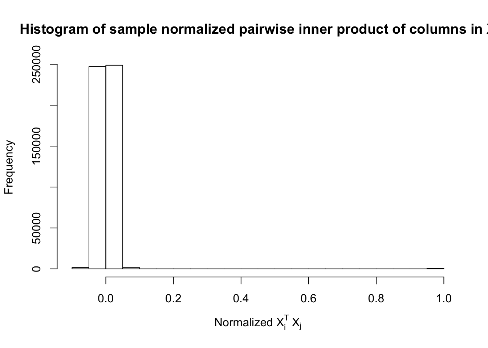
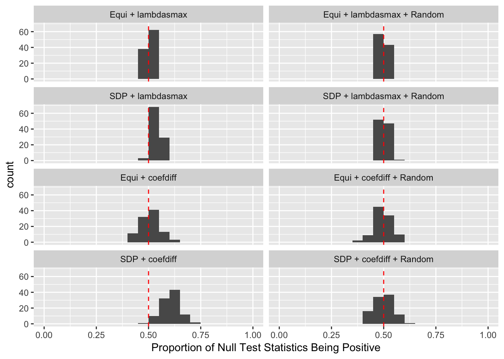
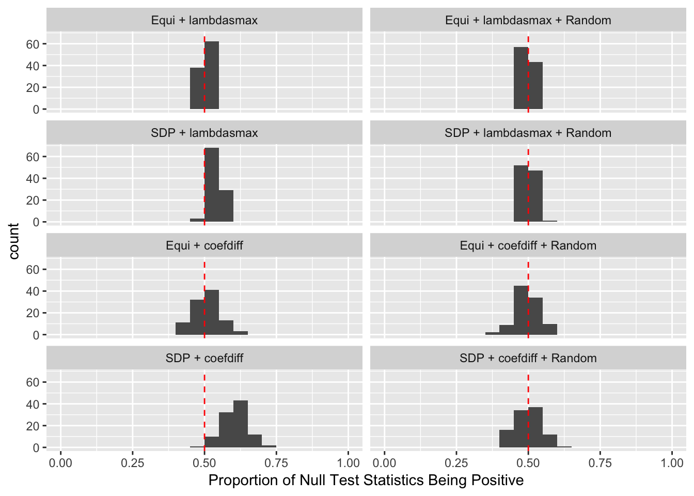
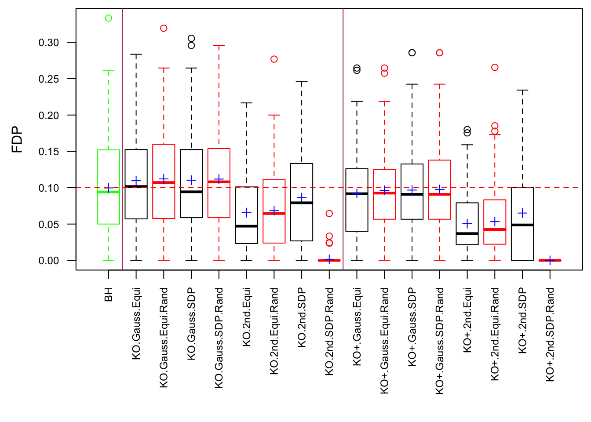
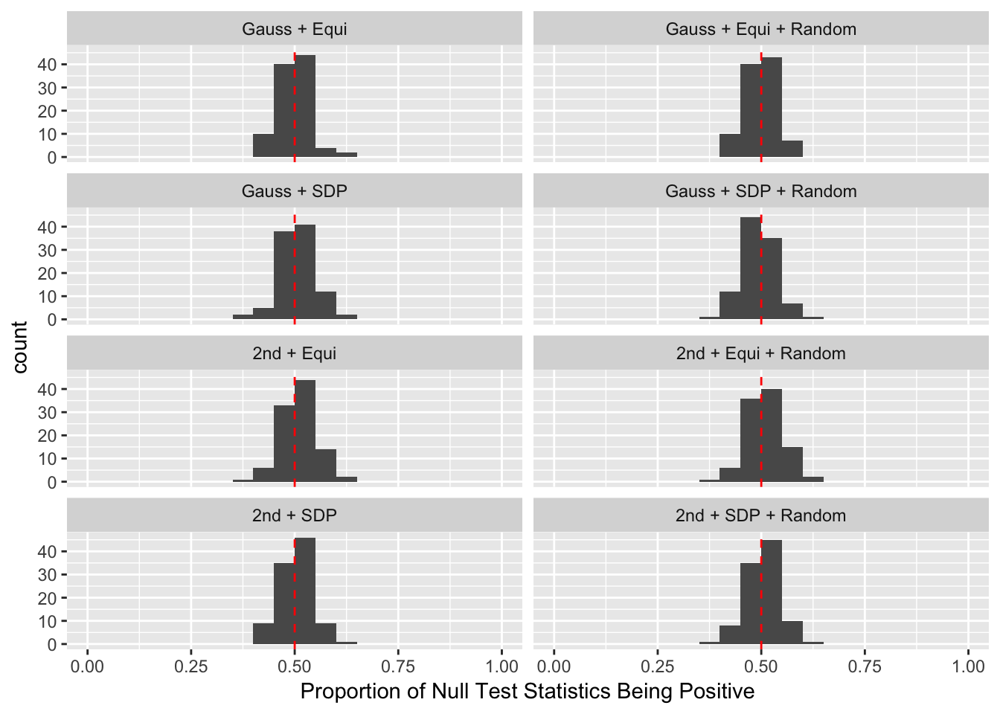
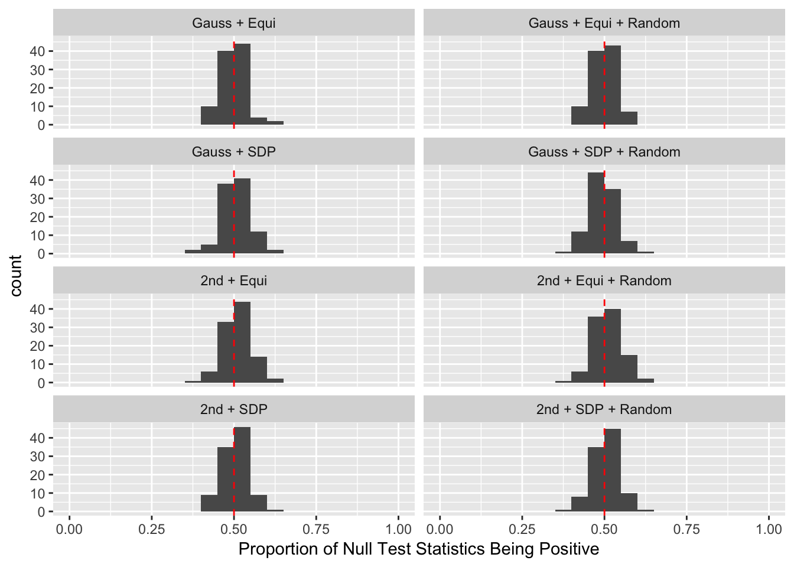

A detailed study of Fixed-\(X\) and Model-\(X\) knockoffs
Lei Sun
2018-03-01
Last updated: 2018-04-05
Code version: 20ea328
Introduction
The idea in Knockoff is to generate knockoff variables \(\tilde X\) which 1) keep the relationship of original variables \(X\) 2) are unlike the original variables 3) are null.
For Fixed-\(X\) Knockoff
\[ \begin{array}{c} \tilde X_i^T\tilde X_i = X_i^TX_i \\ \tilde X_i^T\tilde X_j = X_i^T \tilde X_j = \tilde X_i^T X_j = X_i^TX_j \\ \left|\tilde X_i^T X_i\right|: \text{as small as possible} \end{array} \]
The first two constraints are to control the Type I error, whereas the third is to increase power. Furthermore, there are two methods to make \(\left|\tilde X_i^T X_i\right|\) as small as possible.
- Equi: \(\tilde X_1^T X_1 = \tilde X_2^T X_2 = \cdots = \tilde X_p^T X_p \geq 0\) as close to zero as possible.
- SDP: \(\tilde X_1^T X_1 + \tilde X_2^T X_2 + \cdots + \tilde X_p^T X_p\) as close to zero as possible with \(\tilde X_i^T X_i \geq 0\).
For Model-X Knockoff
\[ \begin{array}{c} Var(X_i) = Var(\tilde X_i) \\ cor(\tilde X_i, \tilde X_j) = cor(X_i, \tilde X_j) = cor(\tilde X_i, X_j) = cor(X_i, X_j) \\ \left|cor(\tilde X_i, X_i)\right|: \text{as small as possible} \end{array} \]
Similarly, the first two constraints are to control the Type I error, whereas the third is to increase power. Furthermore, there are three methods to make \(\left|cor(\tilde X_i, X_i)\right|\) as small as possible.
- Equi: \(cor(\tilde X_1, X_1) = cor(\tilde X_2, X_2) = \cdots = cor(\tilde X_p, X_p) \geq 0\) as close to zero as possible.
- SDP: \(\left|cor(\tilde X_1, X_1)\right| + \left|cor(\tilde X_2, X_2)\right| + \cdots + \left|cor(\tilde X_p, X_p)\right|\) as small as possible.
- aSDP: An approximation to SDP to speed it up and also retain the power to some extend.
After centering \(X_j\)’s, the constraints on the Fix-\(X\) design can be seen as the constraints on the sample correlation structure, whereas those on the Model-\(X\) design as on the population correlation structure. It’s no wonder the Model-\(X\) design is believed to be more relaxed, and hence, more powerful.
n <- 3000
p <- 1000
k <- 50
m <- 100
q <- 0.1Scenario 1: Independent Gaussian Columns
\[ X_{ij} \overset{iid}{\sim} N\left(0, \left(\frac{1}{\sqrt n}\right)^2\right) \]


Fixed Design


Model-\(X\) Design


Scenario 2: Equal-correlation
\[ \begin{array}{c} X_{ij} \sim N\left(0, \left(\frac{1}{\sqrt n}\right)^2\right) \\ cor(X_{ij}, X_{ij'}) \equiv \rho \end{array} \]
\(\rho = 0.5\)


Fixed Design


Model-\(X\) Design

\(\rho = 0.99\)


Fixed Design


Model-\(X\) Design
 

Scenario 3: Extreme local correlation
\[ \begin{array}{c} X_{ij} \sim N\left(0, \left(\frac{1}{\sqrt n}\right)^2\right) \\ cor(X_{i1}, X_{i2}) = cor(X_{i3}, X_{i4}) = \cdots = cor(X_{i(p-1)}, X_{ip}) = \rho = 0.99 \end{array} \]


Fixed Design
 

Model-\(X\) Design

Scenario 4: Factor Model for \(X\)
\[ \begin{array}{c} \text{each row }X_{i}^T \sim N\left(0, \frac{1}n\Sigma_{p}\right) \\ \Sigma_p = \texttt{cov2cor}(B_{p \times d}B_{d\times p}^T + I)\\ B_{ij} \overset{iid}{\sim} N(0, 1) \end{array} \]


Fixed Design

Model-\(X\) Design
 

Scenario 5: Factor Model for \(\hat\beta\)
\[ \begin{array}{c} \text{each row }X_{i}^T \sim N\left(0, \frac{1}n\Sigma_{p}\right) \\ \Sigma_p = \texttt{cov2cor}(\left(B_{p \times d}B_{d\times p}^T + I\right)^{-1})\\ B_{ij} \overset{iid}{\sim} N(0, 1) \end{array} \]


Fixed Design

Model-\(X\) Design

Observation
Model-\(X\) knockoff indeed increases power substantially.
Reason 1: it builds better knockoffs as they are less similar to originals, since Model-\(X\) is about population correlation not sample correlation.
Reason 2: Model-\(X\) unleashes a large swarm of complicated test statistics which are not applicable for Fixed-\(X\).
However, for that particular case when we have \[\Sigma_\hat\beta\] as a factor model, Model-\(X\) knockoffs are still not good.
Session information
sessionInfo()R version 3.4.3 (2017-11-30)
Platform: x86_64-apple-darwin15.6.0 (64-bit)
Running under: macOS High Sierra 10.13.4
Matrix products: default
BLAS: /Library/Frameworks/R.framework/Versions/3.4/Resources/lib/libRblas.0.dylib
LAPACK: /Library/Frameworks/R.framework/Versions/3.4/Resources/lib/libRlapack.dylib
locale:
[1] en_US.UTF-8/en_US.UTF-8/en_US.UTF-8/C/en_US.UTF-8/en_US.UTF-8
attached base packages:
[1] parallel stats graphics grDevices utils datasets methods
[8] base
other attached packages:
[1] lattice_0.20-35 doMC_1.3.5 iterators_1.0.9 foreach_1.4.4
[5] ggplot2_2.2.1 reshape2_1.4.3 Matrix_1.2-12 knockoff_0.3.0
loaded via a namespace (and not attached):
[1] Rcpp_0.12.14 knitr_1.20 magrittr_1.5 munsell_0.4.3
[5] colorspace_1.3-2 rlang_0.1.6 stringr_1.3.0 plyr_1.8.4
[9] tools_3.4.3 grid_3.4.3 gtable_0.2.0 git2r_0.21.0
[13] htmltools_0.3.6 yaml_2.1.18 lazyeval_0.2.1 rprojroot_1.3-2
[17] digest_0.6.15 tibble_1.4.1 codetools_0.2-15 evaluate_0.10.1
[21] rmarkdown_1.9 labeling_0.3 stringi_1.1.6 pillar_1.0.1
[25] compiler_3.4.3 scales_0.5.0 backports_1.1.2 This R Markdown site was created with workflowr